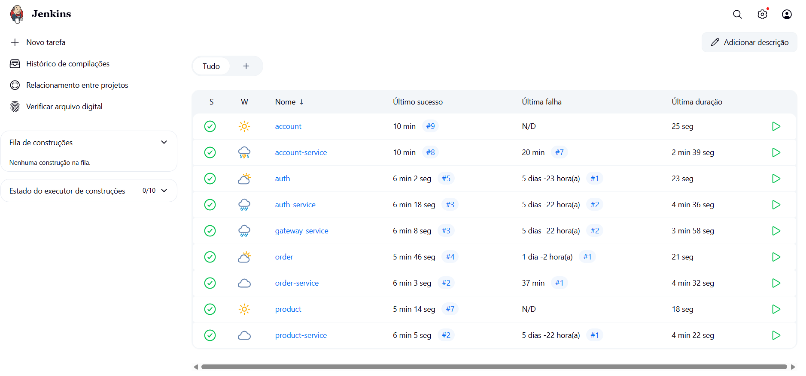
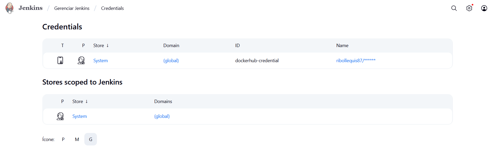

Jenkins
Automatizando builds e integrações no projeto Plataforma de Microsserviços
1. Visão Geral
Nesta etapa do projeto, a proposta era configurar pipelines com Jenkins, integrando os repositórios de cada microsserviço à automação de build e publicação de imagens Docker.
2. Interface Jenkins
A seguir, temos a visão geral da interface do Jenkins com os jobs configurados:
📷 Imagem 1 – Dashboard do Jenkins 
Cada serviço (interface ou service) foi adicionado como um pipeline separado.
3. Credencial Docker Hub
Para permitir o push automático de imagens Docker, foi configurada uma credencial do tipo Username + Password com o ID dockerhub-credential, conforme a imagem abaixo:
📷 Imagem 2 – Credential configurada 
4. Jenkinsfile – Interfaces
As interfaces (como product, order, account) utilizam um Jenkinsfile simples para build Maven:
pipeline {
agent any
stages {
stage('Build') {
steps {
sh 'mvn -B -DskipTests clean install'
}
}
}
}
Este pipeline compila o código e garante que as dependências estejam corretas, mas não realiza deploy de imagens.
5. Jenkinsfile – Services
Para os services (como order-service, product-service, etc.), o Jenkinsfile realiza também o build da imagem Docker e seu push para o Docker Hub:
pipeline {
agent any
environment {
SERVICE = 'order-service'
NAME = "ribollequis87/${env.SERVICE}"
}
stages {
stage('Dependecies') {
steps {
build job: 'order', wait: true
build job: 'product', wait: true
}
}
stage('Build') {
steps {
sh 'mvn -B -DskipTests clean package'
}
}
stage('Build & Push Image') {
steps {
withCredentials([usernamePassword(credentialsId: 'dockerhub-credential', usernameVariable: 'USERNAME', passwordVariable: 'TOKEN')]) {
sh "docker login -u $USERNAME -p $TOKEN"
sh "docker buildx create --use --platform=linux/arm64,linux/amd64 --node multi-platform-builder-${env.SERVICE} --name multi-platform-builder-${env.SERVICE}"
sh "docker buildx build --platform=linux/arm64,linux/amd64 --push --tag ${env.NAME}:latest --tag ${env.NAME}:${env.BUILD_ID} -f Dockerfile ."
sh "docker buildx rm --force multi-platform-builder-${env.SERVICE}"
}
}
}
}
}
Esse pipeline compila, empacota, constrói e publica a imagem usando multi-platform Docker build.
6. Conclusão
O processo de integração contínua via Jenkins foi iniciado corretamente. As principais configurações de credenciais e automações foram implementadas com sucesso e tudo está funcionando.